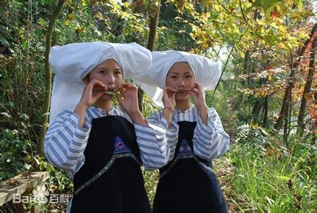

- 民族简介
- 文化习俗
- 历史发展
- 旅游介绍
布依族
布依族，中国西南部一个较大的少数民族，民族语言为布依语，汉藏语系壮侗语族壮傣语支，与壮语有密切的亲属关系，通用汉文。
布依族由古代僚人演变而来，以农业为主，布依族祖先很早就开始种植水稻，享有“水稻民族”之称。
布依族主要分布在贵州、云南、四川等省，其中以贵州省的布依族人口最多，占全国布依族人口的97%。主要聚居在黔南和黔西南两个布依族苗族自治州，以及安顺市、贵阳市、六盘水市，其余各市、州、地均有散居，一小部分居住在越南。 2010年全国第六次人口普查有287万余人 。
布依族源于古“百越”，秦汉以前称“濮越”或“濮夷”，东汉 六朝称“僚”，唐宋称“蕃蛮”，元、明、清至中华人民共和国成立前称“八蕃”、“仲家”、“侬家”、“布笼”、“笼人”、“土人”、“夷族”等。 布依族自称“濮越”或“濮夷”，用汉字记音写为“布夷”、“布依”、“布越依”、“布绛”等等。在布依族语言里，“布”是“族”或“人”的意思。 故旧方志中，有将布依族记为“夷族”、“夷家”、“夷人”者。除自称之外，不同地区布依族之间还互相称为“布笼”、“布那”、“布土”、“布都”、“布央”、“布笼哈”等等。 1953年，根据本民族意愿并经国务院批准，统一命名为“布依族” 。
信仰
布依族信仰祖先和多种神灵。山、水、井、洞及生长奇特的古树无不被认为是神灵的化身。各村寨建有土地庙。一些特定的宗教仪式，要供奉神竹。各地布依族还供奉雷神、门神、灶神、龙王等等。这些反映了布依族作为农耕民族的原始宗教信仰。
建筑
布依族民居有楼房、半楼房和平房数种。 半楼房一般采取后半部是平房，前半部是楼房，或左（ 右）半部是平房，右（左）半部是楼房的建筑格局。楼房和半楼房建筑是布依族传统建筑形式。楼房上层高，住人，下层低，圈牲畜，古称“干栏”，或称“麻栏”。它的结构简单，形式美观，适用于南方山区的地形特点。
饮食
布依族人民以大米为主食，兼食玉米、小麦、红稗、荞麦等。 布依族尤喜糯食，并有多种制作方法，如制成糍粑、圆糖粑、耳块粑、枕头粽和三角粽等。逢年过节，必食糯米饭，并以糯米粑赠送亲友。节日里还喜食用花汁和树叶汁染制的各色“糯饭”。 副食有各种蔬菜、豆类和肉类。蔬菜加工制品有著名的“独山盐酸”、“酸辣椒”等。肉类加工有熏腌腊肉和香肠；喜食狗肉，各地加工方式不一，风味独特，较著名的有“花江狗肉”、“都匀黄焖狗肉”、“册亨狗肉全席”等。豆类制品主要有豆豉、豆腐、血豆腐等。
服饰
布依族服饰多为青、蓝、白等色。 男子在20世纪70年代以前包头巾、穿对襟短衣或大襟长衫及长裤。老人多着长衫。
历史
有学者认为，西汉时的“夜郎”国与布依族有一定渊源关系。其证据为：“夜郎”国辖地虽广，但其中心区当在布依族聚居的今贵阳市、安顺市、黔西南或黔南自治州一带；其次，“夜”与“越”、“郎”与“骆”音近，而“郎夜”（即“夜郎”）与“骆越”含义也是一样的，意为“以郎氏为首领的越人国”。“郎”、“骆”是古代越人对“郎”氏族王、官、领袖或头人首领的音译。最早见于《华阳国志·南中志》和《后汉书·西南夷列传》，相传“夜郎”出自“竹子”（即竹笋），长大后有德于西南夷，是为夜郎王。子孙相沿，以“郎”为首领或当官的。今布依、壮语仍称竹笋为“ranz”，译成汉字就是“郎”。明清称“土官”为“郎”，“汉官”称“汉郎”，又侮称变成“狼”。后来汉族却逐步用来称呼其族或其地。
魏晋南北朝至唐代，布依族、壮族被称为“俚僚”、“蛮僚”或“夷僚”。五代以后称布依族为“仲家”，宋代称壮族为“壮”。“仲”与“壮”同音异写。后来，由于长期分居，便逐步形成了布依与壮两个民族。 考古工作者在贵州省安顺、贵阳及黔南等现布依族聚居区出土了数十件新石器时代磨制石器，其中一些石器，如有肩石锛、带肩石斧等，其形状与东南沿海及华南地区的同类器物形状很相似，可能这些都是古代越人遗留下来的文化，同布依族先民有密切联系。
秦、汉时代的布依族地区，已经产生世袭的王或侯。王侯居住的地方已经形成了“邑聚”，并有强大的武装力量。这说明当时社会生产力已有较大发展。据考古证明，在布依族地区出土的两汉时代文物，主要是铜器和铁器。例如在黔西南州发现汉代的青铜犁、锄、斧、钺，清镇十八号墓出土汉代的青铜剑和钺，以及其它地区出土的汉代铁制锄、锸、铲等，表明当时布依族地区农业生产已经相当发达，但比中原地区落后，仍停留在铜铁并用阶段。这种情况，同《华阳国志》所说“畲山为田，无蚕桑，颇尚学书，……寡畜产，虽有僮仆，方诸郡为贫”是一致的。
关岭布依族苗族自治县
关岭布依族苗族自治县位于贵州西南部，隶属于安顺市。区位优势十分明显。东北、西北与镇宁自治县、六枝特区毗邻，西南以北盘江为界和晴隆、兴仁、贞丰三县相望。自然风景优美，历史悠久，文化丰富。
风景名胜
关岭境内河流纵横，瀑布成群，溶洞众多，山川秀丽，自然景观和人文景观紧密结合，截然难分。打邦河上有闻名世界的黄果树瀑布群，那大关瀑布；江河峡谷中游览价值极高的有花江大峡谷（省级风景名胜区）、灞陵河峡谷和补母当河峡谷、打邦河峡谷；关岭乐安温泉位于打邦河右岸上关镇乐安寨的田坝中间，有三温一冷四泉水，水温37—40℃，流量1.76升/秒。泉水中含有大量对人体有益的矿物质和微量元素。附近有满山枫树、香蕉、黄果树林，还有天生岩纹图，紧靠那大瀑布景点，是旅游、度假、疗养的好地方；溶洞被称为“地下奇观”，关岭县境内溶岩发育完整，洞穴成群，部分洞内有大量的古代石刻。1984年县科委和南京大学部分教授、学生连续三年暑假在关岭县进行实地考察，新发现的洞就有一百多个。关岭古生物化石发掘于1929年，其埋藏面广，品种繁多，形态精美，保存完好，实属罕见，有“关岭生物群化石是*晚三叠世*的化石库”之称。
旅游时间
关岭四季皆宜旅游。关岭境内气候呈立体状，跨越南温带、北亚热带、中亚热带，主要以中亚热带季风湿润气候为主，四季分明，热量充足，水热同季。境内12.5%的低热河谷地区有“天然温室”之称。累计年平均气温为16.2℃，年平均*气温为16.9℃，*气温15.4℃，雨量充沛，年降水量1205.1—1656.8毫米，是全省降水中心之一。
天星桥, 天星桥区则是玲珑秀美石，笋密集，植被茂盛，被誉为：风刀水剑刻就的“万倾盆景”。
银链坠潭瀑布
犀牛洞
滴水滩瀑布
关岭花江大峡谷